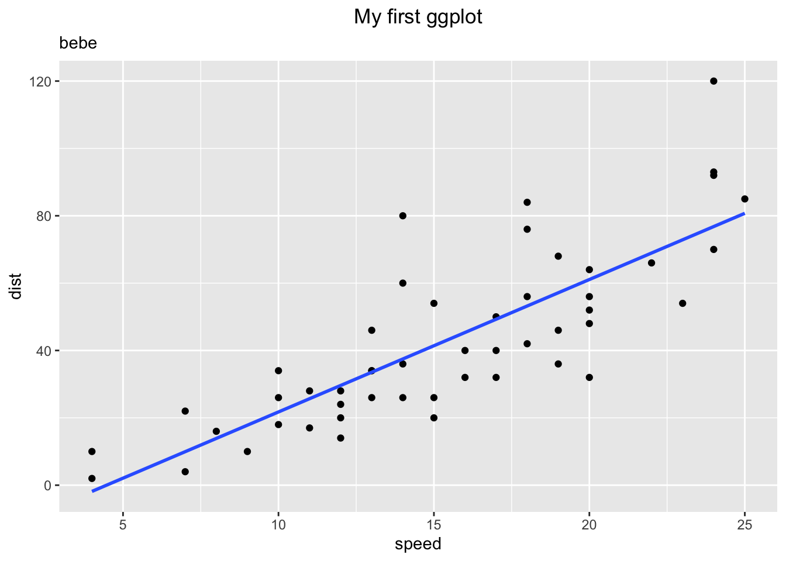
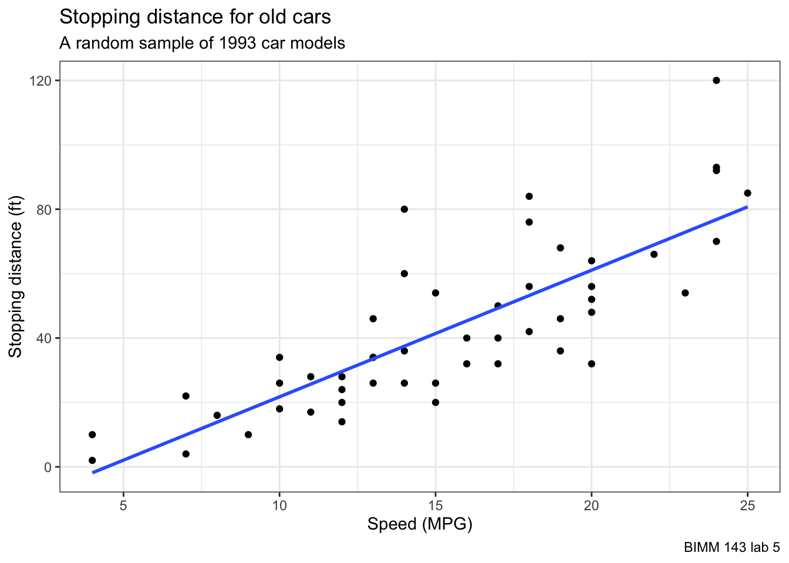
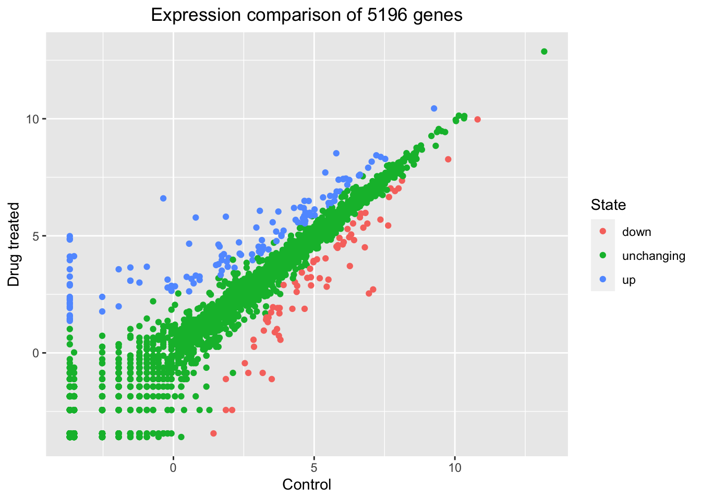

head(cars) speed dist
1 4 2
2 4 10
3 7 4
4 7 22
5 8 16
6 9 10There are many graphics systems available in R, including so co-called”base” R graphics and the very popular ggplot2 package.
To compare these let’s play with the inbuilt cars dataset.
head(cars) speed dist
1 4 2
2 4 10
3 7 4
4 7 22
5 8 16
6 9 10To use “base” R, I can simply call the plot() function:
plot(cars)
To use ggplot2 package, I first need to install it with the function install.packages("ggplot2").
I will run this in my R console (i.e. the R brain) as I do not want to re-install it every time I render my report…
The main function in this package is called ggplot() . Can I use call it?
library(ggplot2)
ggplot()
To make a figure with ggplot(), I need always at least 3 things:
data (i.e. what I want to plot)
aes: aesthetic mapping of the data to the plot I want
geom (i.e. How I want to plot the data)
ggplot(data=cars) +
aes(x=speed, y=dist) +
geom_point()
If I want to add more stuff, I can just keep adding layers. E.g.
theme_update(plot.title = element_text(hjust = 0.5))
ggplot(data=cars) +
aes(x=speed, y=dist) +
geom_point() +
geom_smooth(method = lm, se = FALSE) +
ggtitle(label = "My first ggplot", subtitle = "bebe")`geom_smooth()` using formula = 'y ~ x'
Ggplot is much more verbose than “base” R plots for standard plots but it has a consistent layer system that I can use to make just about my plot.
To add labels to plot
ggplot(data=cars) +
aes(x=speed, y=dist) +
geom_point() +
geom_smooth(method = lm, se = FALSE) +
labs(title = "Stopping distance for old cars",
subtitle = "A random sample of 1993 car models",
caption = "BIMM 143 lab 5",
x="Speed (MPG)",
y="Stopping distance (ft)") +
theme_bw()`geom_smooth()` using formula = 'y ~ x'
Let’s plot some gene expression data
url <- "https://bioboot.github.io/bimm143_S20/class-material/up_down_expression.txt"
genes <- read.delim(url)
head(genes) Gene Condition1 Condition2 State
1 A4GNT -3.6808610 -3.4401355 unchanging
2 AAAS 4.5479580 4.3864126 unchanging
3 AASDH 3.7190695 3.4787276 unchanging
4 AATF 5.0784720 5.0151916 unchanging
5 AATK 0.4711421 0.5598642 unchanging
6 AB015752.4 -3.6808610 -3.5921390 unchangingQ How do you tell how many rows are in the
genesdataframe?
nrow(genes)[1] 5196Q How can we summarize that last column
State?
table(genes$State)
down unchanging up
72 4997 127 Now we start plotting
p <- ggplot(genes) +
aes(x=Condition1, y=Condition2, color=State) +
geom_point()I can now just call p when I want to plot or add to it.
p + labs(title="Expression comparison of 5196 genes",
x="Control", y="Drug treated")